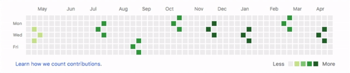

Интересные GitHub-проекты: игры в графике активности GitHub
Расширение contrib-awakens для Chrome займёт скучающего программиста игрой прямо на странице профиля GitHub.

Это может показаться странным, но GitHub-репозиторий можно сделать более интерактивным и, в каком-то смысле, развлекательным. Французский программист Габин Орэш создал расширение contrib-awakens для браузера Chrome, превращающее график активности GitHub в настоящее игровое поле:
Как поиграть?
Для начала игровых сражений вам необходимо установить расширение, а затем просто перейти на главную страницу любого GitHub-аккаунта.
Всего доступно 4 игры, среди которых аналоги Flappy Bird и танков для тетриса. Смена игр производится обыкновенным обновлением страницы браузера. Управление осуществляется стрелочками клавиатуры, а в танках даже можно пострелять пробелом.
А есть ещё игры?
Габин также приглашает других пользователей участвовать в создании новых игр. Он подробно описал API своего проекта, а также привёл несколько функций, необходимых для написания игр.